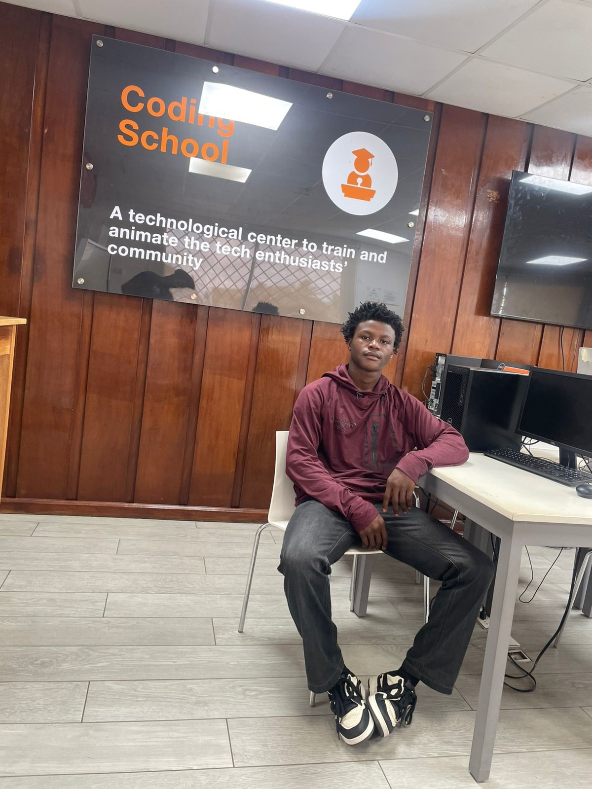

01
 PSN / Developing initiative
PSN / Developing initiativeProSkill
Network PSN
A developing social-impact initiative connecting skills, entrepreneurship, financial literacy, digital development, and opportunity within a broader ecosystem.
Entrepreneurship × Technology × Innovation
Aspiring entrepreneur & software engineer in development.
I explore meaningful problems at the intersection of business, software, artificial intelligence, and digital creation.

JKSPortrait02 / Who I am
I am an aspiring entrepreneur, digital creator, and technology enthusiast developing toward software engineering and advanced study in artificial intelligence and machine learning.
I care about understanding people, identifying meaningful problems, exploring opportunities, and turning early ideas into useful possibilities. I am learning through practice, collaboration, and the discipline of making things clearer each time.
See my journey03 / Selected work
Early-stage initiatives, collaborative projects, and the thinking behind them.
PSN / Developing initiativeA developing social-impact initiative connecting skills, entrepreneurship, financial literacy, digital development, and opportunity within a broader ecosystem.
 Orange Summer Challenge 2026 / Team project
Orange Summer Challenge 2026 / Team projectA collaborative Orange Summer Challenge project helping students prepare for WAEC/WASSCE through digital learning, practice resources, AI-assisted support, and performance-oriented tools.
Both projects are active learning experiences, not finished products.
04 / Capabilities
A growing toolkit shaped by curiosity, practice, and useful collaboration.
Exploring problems, opportunities, business models, and the choices that move an idea forward.
Building toward strong technical foundations through hands-on learning and thoughtful implementation.
Developing a grounded understanding of how intelligent systems can support useful products.
A future specialization I intend to pursue through deeper technical study.
Connecting user needs, clear communication, and practical decisions into a coherent direction.
Using content, visual communication, and personal branding to make ideas easier to understand.
Contributing with openness, responsibility, and a willingness to learn from a team.
Turning complex or early-stage thinking into language people can engage with.
05 / Credentials & professional development
A considered archive of online learning and training behind the direction of this portfolio.
These credentials represent the knowledge and development behind the projects and professional direction shown throughout this portfolio.
Featured credentials / credential archiveNo credentials in this category yet.
Vocational training / 2026
Forlife Zoe Vocational Training Institute
Jacob Town, Peach Island, Monrovia, Liberia
06 / Services
Practical support for entrepreneurs, creators, and small teams at an early or important stage.
07 / Professional journey
A record of formative milestones and the experiences shaping my direction.
Education
Graduated as Salutatorian (Second Dux). Served as Senior Class President and Student Council Government Speaker.
Professional development
Developing entrepreneurial perspective through Market Research for Entrepreneur and Media MasterClass for Entrepreneur.
Innovation program
Selected young talent contributing to WASSCElab, a team project focused on education technology.
07 / Future direction
The long-term goal is clear: combine business knowledge with serious technical capability to build meaningful products and ventures.
I intend to deepen my software engineering knowledge and pursue advanced education in Artificial Intelligence and/or Machine Learning. The work starts with learning deeply, building consistently, and staying close to real problems.
08 / Digital creation
Future work will live here as it takes shape: images, video, experiments, and useful things worth sharing.
Archive opening soonBuild before you feel ready, learn beyond what you already know, and let every challenge refine the person you are becoming. The future belongs not merely to those who imagine what is possible, but to those who are willing to turn curiosity into knowledge, knowledge into capability, and capability into something that creates lasting value.
09 / Contact
Open to meaningful conversations, collaborations, learning opportunities, entrepreneurial ideas, technology projects, and professional connections.